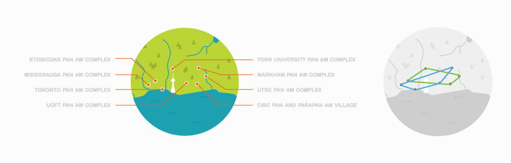
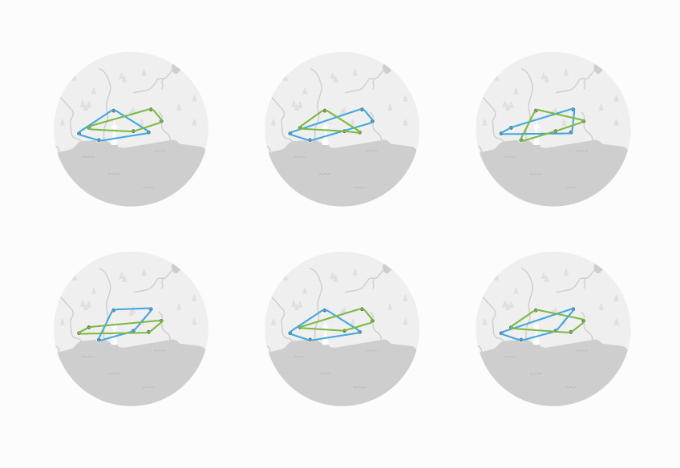

Taste of PanAm
Toronto Pan Am 2015
The Pan American Games are the world's third largest mutli-sport Games. In preperation for the Toronto Pan Am 2015 games, the Taste of Pam Am is a 2 day food festival that celebrates the diversity of the gathering cultures through food.
From Diversity to Inclusivity
Modular Logo Design
Due to the plethora of cultures represented in the festival, creating a logo that embodied all components proved to be a challenge. In order to represent diversity I couldn't use a fork unless I included all the utensils; I couldn't use a slice of bread unless I included all the food times; I couldn't use a flag unless I included all the flags. As a result I decided to take a different approach. Instead of creating a mark that symbolized diversity, I symbolized how Toronto has forged inclusivity from diversity. Utilizing each Pan Am landmark as a guide, the logo was created by connecting each point. From here, a series of logo marks were created, each to be used interchangeably. Each logo was still visually similar, although slightly different, they each possessed similar structure, colour and form. We weren't trying to sell a logo; we wanted to sell an idea, a concept, and a brand.
